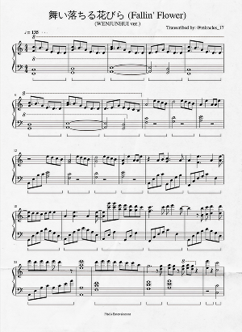

I played this song live once at Kyoto Station in Japan!

I loved this arrangement done by Jun of SEVENTEEN.
I learned and recorded the first 30 seconds of this song in one day.

A song request from a friend; I hadn't heard it before but I loved it.
I learned this after hearing a cover of it on YouTube by 王OK.